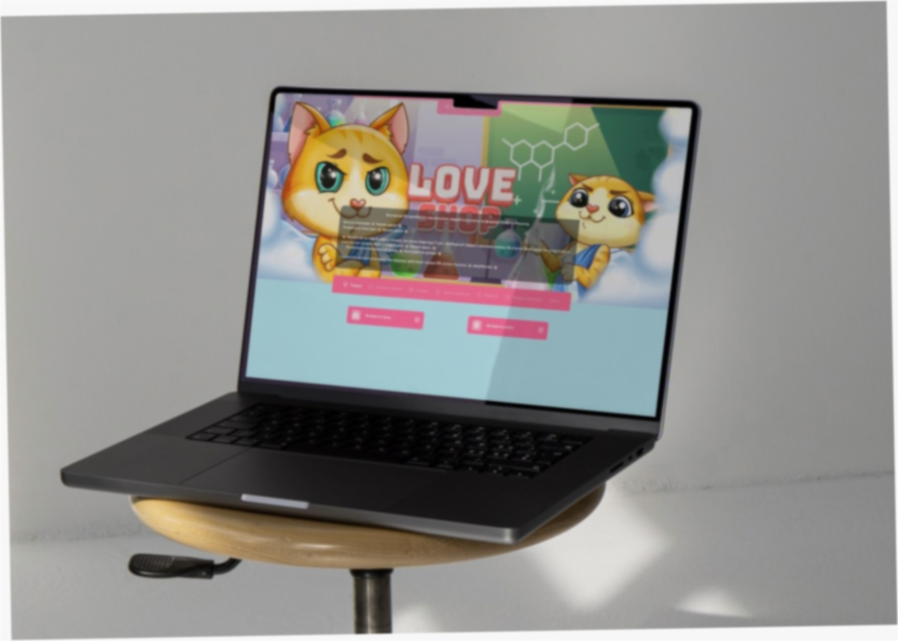

Лав шоп ссылка: ваш гид по лучшим коллекциям цифровых активов

В современном цифровом мире понятие «лав шоп ссылка» стало символом доступа к уникальным и качественным виртуальным товарам. Для миллионов пользователей по всему миру это не просто набор символов, а настоящий портал в мир развлечений, творчества и самовыражения. Интернет-магазин LoveShop гордится тем, что предлагает своим клиентам одни из самых продуманных и разнообразных коллекций на рынке.
Что такое цифровые коллекции и почему они так популярны?
Цифровые коллекции — это тщательно подобранные наборы виртуальных товаров, объединенные общей тематикой, стилем или предназначением loveshop13 biz. В отличие от физических предметов, они не занимают места, их невозможно сломать или потерять (при должном хранении), и они открывают безграничные возможности для кастомизации вашего онлайн-пространства.
Популярность коллекций из LoveShop объясняется несколькими ключевыми факторами:
Доступность и мгновенная доставка. Вы получаете товар сразу после оплаты, в любое время суток и из любой точки мира.
Широкий выбор. Наши коллекции охватывают самые разные интересы и потребности.
Высокое качество. Каждый цифровой актив проходит тщательную проверку и оптимизацию.
Эксклюзивность. Многие предметы из наших коллекций создаются эксклюзивно для LoveShop.
Лучшие коллекции LoveShop: обзор категорий
Наш магазин постоянно работает над расширением ассортимента. Вот основные направления, которые пользуются наибольшим спросом у наших покупателей.
Коллекции для стримеров и контент-мейкеров
Создание уникального контента требует соответствующих инструментов. В этой категории мы собрали все необходимое для профессиональной деятельности:
Оверлеи и анимированные баннеры. Готовые решения для оформления стримов на разных платформах. Яркие, современные дизайны, которые помогут вашему каналу выделиться.
Наборы алертов. Звуковые и визуальные оповещения о новых подписчиках, донатах и других событиях t me loveshop. Создайте уникальную атмосферу взаимодействия с вашей аудиторией.
Аватары и элементы для VTube. Современные технологии позволяют оживить ваш цифровой образ. Наша коллекция включает в себя разнообразные модели и аксессуары для виртуальных аватаров.
Коллекции для геймеров
Игровая индустрия — один из главных драйверов рынка цифровых товаров. LoveShop предлагает коллекции, которые сделают ваш игровой опыт еще ярче:
Скины и персонализация для популярных игр. Измените внешний вид вашего оружия, персонажа или транспорта loveshop12. Наши дизайнеры следят за трендами и предлагают актуальные решения.
Обои и цифровые арты с игровой тематикой. Превратите свой рабочий стол или мобильное устройство в продолжение вашего игрового мира.
Наборы внутриигровой валюты и ресурсов. Экономьте время и получайте больше удовольствия от игры.
Коллекции для творчества и дизайна
Для тех, кто создает красоту в цифровом пространстве, у нас есть отдельные подборки:
Шаблоны для социальных сетей. Готовые макеты для Instagram, TikTok, YouTube и других платформ. Стильные, адаптивные и легко настраиваемые под ваш бренд.
Цифровые фоны для Zoom и других видеоконференций. Профессиональные и креативные фоны, которые произведут впечатление на коллег и партнеров.
Наборы шрифтов и графических элементов. Уникальные типографика и иконки для ваших проектов.
Эксклюзивные и лимитированные коллекции
Особой гордостью LoveShop являются эксклюзивные коллекции, которые выпускаются ограниченным тиражом. Эти цифровые активы создаются в сотрудничестве с известными цифровыми художниками и дизайнерами. Приобретение предметов из таких коллекций — это не только возможность получить уникальный продукт, но и инвестиция в цифровое искусство.
Как выбрать подходящую коллекцию?
С таким разнообразием выбор может показаться сложным. Следуйте этим простым советам, чтобы найти именно то, что вам нужно:
Определите цель. Чего вы хотите достичь с помощью цифрового актива? Улучшить стрим, персонализировать игру или создать уникальный контент?
Обратите внимание на совместимость. Убедитесь, что выбранный товар подходит для вашей платформы, программы или игры.
Изучите описание и технические характеристики. Мы предоставляем полную информацию о каждом товаре, включая формат файлов, разрешение и инструкции по применению.
Ориентируйтесь на стиль. Выбирайте коллекции, которые соответствуют вашему личному или корпоративному стилю.
Почему покупатели выбирают LoveShop?
За годы работы мы заслужили репутацию надежного партнера в мире цифровых товаров лав шоп. Наши преимущества говорят сами за себя:
Гарантия качества. Мы лично проверяем каждый товар перед тем, как добавить его в каталог.
Постоянное обновление ассортимента. Мы следим за трендами и регулярно пополняем наши коллекции новинками.
Удобная система поиска и навигации. Найти нужный товар в нашем магазине можно всего за несколько кликов.
Круглосуточная поддержка. Наша служба заботы о клиентах всегда готова помочь с выбором и ответить на любые вопросы.
Доступные цены и выгодные предложения. Мы стремимся делать цифровые блага доступными для всех.
Поиск «лав шоп ссылка» для многих пользователей — это начало пути к преображению своего цифрового мира. Это стремление к уникальности, комфорту и самовыражению через виртуальные продукты. И именно это стремление мы стремимся удовлетворить в полной мере.
Ваш следующий шаг к уникальному цифровому опыту
Теперь, когда вы знаете о разнообразии и качестве наших коллекций, пришло время действовать. Не откладывайте на потом возможность сделать ваше онлайн-пространство именно таким, каким вы его всегда представляли.
Посетите наш интернет-магазин LoveShop прямо сейчас, чтобы ознакомиться со всеми коллекциями и выбрать цифровые активы, которые идеально подходят именно вам. Откройте для себя мир безграничных цифровых возможностей вместе с нами!